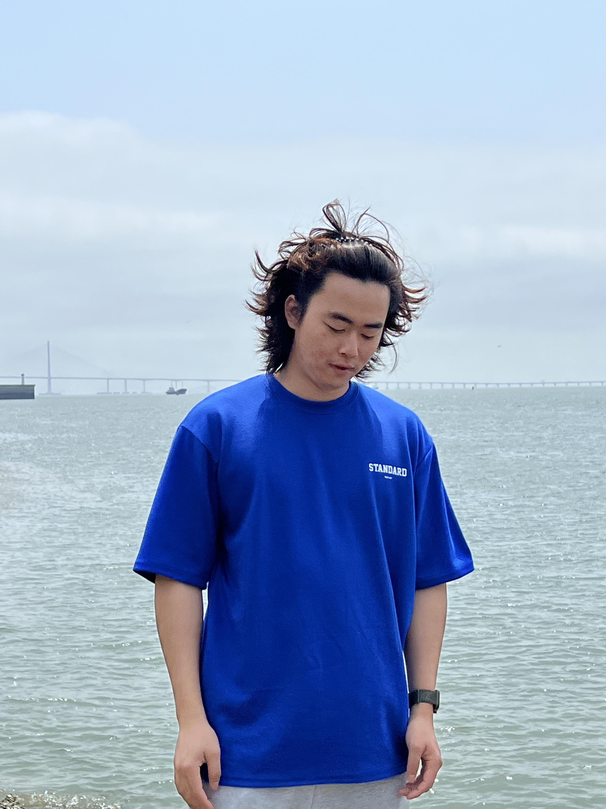
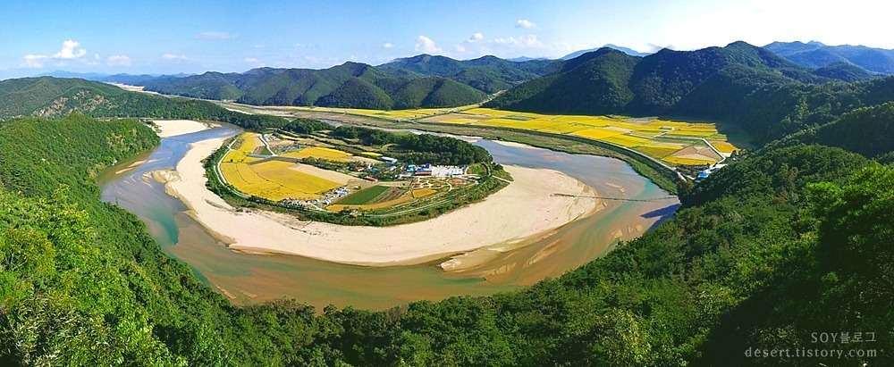

고서현의 자기소개

태어난곳은 경상북도 예천군입니다

생년월일:1997년 05월 15일 생입니다
취미는?: 야구경기 관람, 야밤에 산책하기 예쁜 풍경보러가기 입니다!
야구경기 관람은 어렸을 적 부터 이어오던 취미 입니다
특히 삼성라이온즈의 팬으로 야구의 승패에 따라 기분이 바뀔정도로 좋아합니다
개인적으로 좋아하는 장소입니다!!
앞으로 조원들과 함께 수료까지 같이 가고 싶습니다 잘부탁 드리겠습니다!!!
태어난곳은 경상북도 예천군입니다
생년월일:1997년 05월 15일 생입니다
취미는?: 야구경기 관람, 야밤에 산책하기 예쁜 풍경보러가기 입니다!
야구경기 관람은 어렸을 적 부터 이어오던 취미 입니다
특히 삼성라이온즈의 팬으로 야구의 승패에 따라 기분이 바뀔정도로 좋아합니다